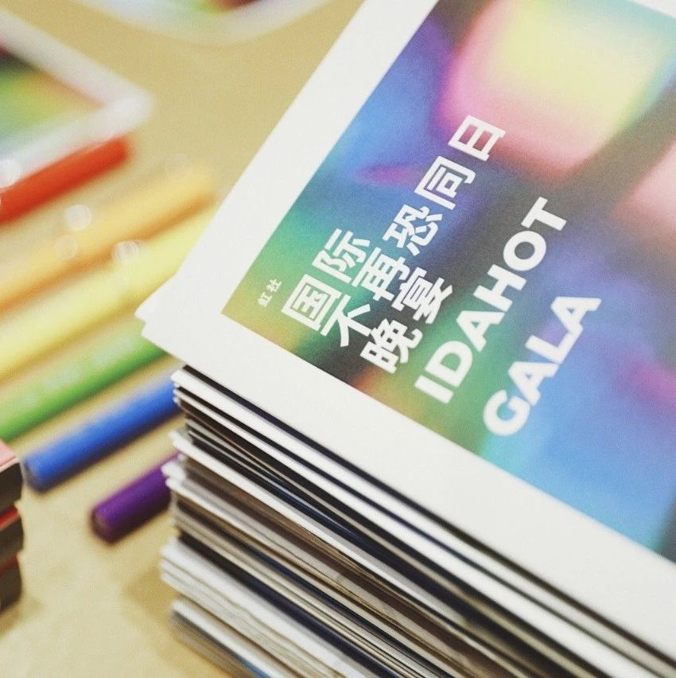

Qmmunity's FIRST IDAHOT GALA BRINGS COMMUNITY TOGETHER


Aside from raising support for Qmmunity and LGBTQ in China, the gala represented a safe space for members of marginalized communities to share their stories and identities without fear or shame.
“This event is a true testimony to what happens when the LGBTQ community and allies come together to celebrate identity,” event organizer Gabriel said. “It combined so many elements of the community and created a platform for both allies and Chinese LGBTQ to be heard.”


IDAHOT GALA


IDAHOT GALA